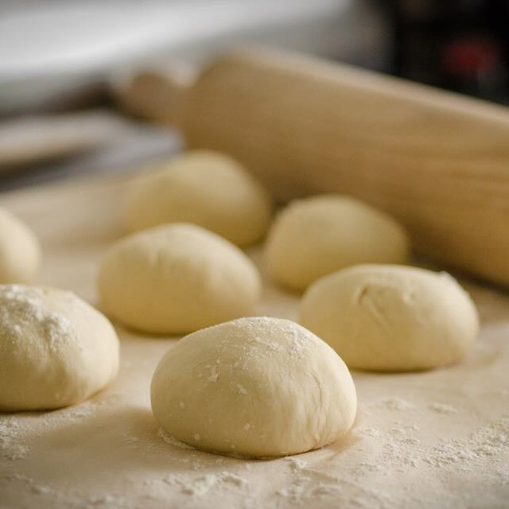

Learn everything about pizza
We got the latest news, recipes, and taste tests of your next favorite pizza restaurant. Have you always wanted to be a pizza nerd? Then sign up for our newsletter so you get all the new posts.

How to make the best pizza

First make some nice dough and let it sit for 40 minutes to get fluffy and big.

Get your favorite tomato sauce or make a delicious white sauce put it on the pizza.

Now you have the hardest choice! Select some good ingredients and arrange them nicely.

Finally your pizza is prepared. Let it bake for 10 minutes in your preheated oven.
A pizza slice a day keeps sadness away. - Jet Paacal
Anyone who says that money cannot buy happiness has clearly never spent their money on pizza. - Andrew W.K.
Never miss the latest pizza trends
Sign up for our newsletter by clicking that button right over there.